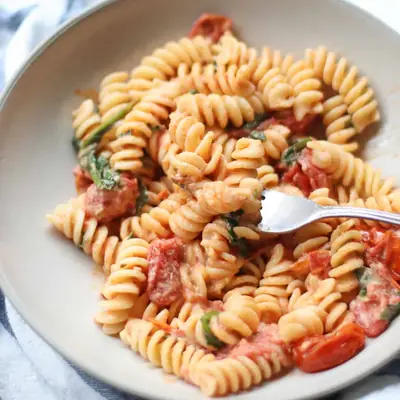

Creamy Boursin Pasta

Ingredients
- 1/4 cup extra virgin olive oil
- 3 garlic cloves, peeled and halved
- 2 pints cherry or grape tomatoes
- 1 (5.2 ounce) boursin cheese
- 2 cups roughly chopped baby spinach
- 10 ounces pasta of choice
- 1/2 cup reserved pasta cooking water
Steps
- Preheat oven to 400°F. Place the cherry tomatoes and garlic in a 13x9 inch baking dish. Place the boursin cheese in the middle of the dish. Pour olive oil on top and give everything a good toss. Bake for 25-30 minutes, until the tomatoes burst and the cheese softens.
- Meanwhile, cook pasta until al dente. Drain, reserving 1/2-3/4 cup of pasta water.
- Remove from the baking dish from the oven and add the basil and spinach. Smash the roasted tomatoes, garlic, and cream cheese with the back of a spoon until creamy.
- Add the cooked pasta and stir well. Add some pasta water to thin out the mixture until desired consistency is reached.
- Sprinkle some parmesan cheese, freshly grated black pepper, or red pepper flakes, if you prefer, and enjoy!
Recipe by Min Kwon · Kidfriendly Meals, from MJ and Hungryman. Saved here for personal use; the original has the full notes, tips and photos. Open original